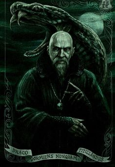

Barón Sanguinario

Fantasma de la casa Slytherin
Salazar Slytherin

Es una de las cuatro casas del Colegio Hogwarts de Magia y Hechicería, fundada por Salazar Slytherin. Al establecer la casa, Salazar instruyó al Sombrero Seleccionador para que seleccionara a los estudiantes que tenían las características particulares que él valoraba más. Esas características incluyen: astucia, ingenio y ambición. Muchos estudiantes de Slytherin tienden a hacer camarillas juntos, a menudo adquiriendo líderes, lo que es un ejemplo más de las ambiciosas cualidades de Slytherin. Ejemplos de estos incluyen la pandilla de Draco Malfoy y los mortífagos.
El fundador valoraba y favorecía a los estudiantes de sangre pura y el Sombrero Seleccionador admitió que puede ser un factor al ser seleccionado. Los estudiantes de cualquier estatus de sangre ahora pueden ser ubicados en la casa. Sin embargo, un estudiante hijo de muggles de esa casa se considera bastante raro.
El animal emblemático de la casa es una serpiente y sus colores son verde y plateado. Hubo dos jefes notables de la casa; Horace Slughorn ocupó el lugar dos veces (primero fue en 1981 y luego nuevamente desde 1997), y Severus Snape. El patrón fantasma de la casa es el Barón Sanguinario.
Slytherin corresponde aproximadamente al elemento de agua debido a que las serpientes se asocian comúnmente con el mar y los lagos en la mitología de Europa occidental, así como las serpientes son animales físicamente fluidos y flexibles.[2] Del mismo modo, en la mitología celta, el agua se ve como un portal a otro mundo, lo que lleva a algunos a especular que el elemento fue elegido para simbolizar la esperanza de muchos Slytherin de alcanzar una comunidad sangre pura. Los colores también se corresponden con las aguas alrededor de los lagos y lagunas, que a menudo son de color verde, y el plateado a menudo se asocia con el agua de lluvia gris.
La predilección por la pureza de sangre de Salazar creó una gran controversia en Hogwarts y fue la raíz de una disputa entre los antiguos amigos Salazar y Godric Gryffindor. Más tarde, Salazar decidió abandonar el colegio cuando se inició una discusión entre él y Godric y se enfrentaron o iniciaron una guerra civil entre las dos casas. Tal discusión se conocería por siempre sobre el origen de la disputa entre las dos casas y también las convertiría en las casas más competitivas.
Cuando Salazar se fue de Hogwarts, dejó atrás la Cámara de los Secretos con el propósito de que un heredero la abriera y desatara un monstruo para purgar al colegio de aquellos que, en opinión de Slytherin, eran indignos de estudiar magia: los hijos de muggles. La cámara se abrió dos veces y el monstruo fue asesinado la segunda vez por Harry Potter en 1993. Las opiniones de Salazar en ese momento podrían atribuirse a la persecución de las brujas y magos de la mano de los muggles durante ese siglo.
El Sombrero Seleccionador afirma que la pureza de sangre era un factor en la selección de los Slytherin. No es el factor principal, pero sugiere que el sombrero tiene en cuenta el linaje del estudiante, así como los rasgos. Existen Slytherin hijos de muggles, pero son muy raros, como notó insultantemente Scabior el carroñero.
También ha habido ejemplos definidos de mestizos seleccionados en la casa, incluidos Tom Ryddle, Dolores Umbridge y Severus Snape. Harry Potter estuvo a punto de ser seleccionado para Slytherin, pero como lo pidió, terminó en Gryffindor. Además, los sangre pura no se colocan automáticamente en Slytherin. Ha habido varios ejemplos de sangre pura seleccionados para otras casas; la familia Weasley, Sirius Black, Neville Longbottom y James Potter fueron seleccionados para la casa de Gryffindor, Ernie Macmillan fue seleccionado para Hufflepuff y Morag MacDougal y Stephen Cornfoot ambos fueron seleccionados para Ravenclaw.
El concepto de pureza de sangre que desempeña un papel en la selección de estudiantes para la casa Slytherin proviene del fundador Salazar Slytherin que quería una política más estricta de admisión en el colegio, una limitada estrictamente a los estudiantes de sangre pura. Esto era contrario a los deseos de los otros fundadores del Colegio Hogwarts de Magia y Hechicería, que querían aceptar estudiantes de cualquier estatus de sangre.
Es importante señalar que no todos los estudiantes en Slytherin están de acuerdo con la idea de la pureza de sangre, pero la mayoría compartía los puntos de vista de su fundador mil años más tarde. Dado que la casa casi siempre seleccionaba a estudiantes que compartían su punto de vista para esa casa, muchos miembros aún le daban esa impresión a la casa durante su tiempo en Hogwarts. Por ejemplo, en diciembre de 1992, la contraseña para la sala común era sangre pura.
Slytherin y Gryffindor son generalmente rivales en Quidditch y en la Copa de las Casas, de las cuales el primero había ganado siete años seguidos antes de la llegada de Harry Potter a Hogwarts en 1991. También es raro que los estudiantes de Slytherin y Gryffindor sean amigables entre ellos, y también es bastante común que compartan animosidad. Hay excepciones, como el Slytherin Severus Snape y la Gryffindor Lily Evans, que fueron los mejores amigos hasta que Snape usó el insulto "sangre sucia", así como sus aspiraciones de ser un mortifago, e hicieron que Lily cortara su amistad.
La rivalidad fue particularmente el caso durante la Primera y Segunda Guerra Mágica. Durante la segunda guerra, ningún estudiante de Slytherin se unió a la asociación conocida como el Ejército de Dumbledore; sin embargo, es probable que sea culpa de Hermione Granger, Ron Weasley y de Harry Potter, que solo invitaron a personas en quienes confiaban. Los tres también compartían una profunda desconfianza con cualquier Slytherin.
Hay una terrible tensión, rivalidad y aversión entre los estudiantes de Gryffindor Harry Potter, Hermione Granger y Ronald Weasley, y el Slytherin Draco Malfoy y su pandilla, hasta el punto en que Hermione incluso le dio un puñetazo a Draco en su tercer año. Además, desde el momento en que Harry y Draco se conocieron, se convirtieron en enemigos inmediatos.
La relación de Slytherin con las otras dos casas, Hufflepuff y Ravenclaw, era variable. En los años de Harry Potter en Hogwarts, Hufflepuff y Ravenclaw estaban frustrados por la racha ganadora de siete años de Slytherin y apoyaban fácilmente a Gryffindor en sus esfuerzos por romperla, hasta el punto de que incluso se volvieron contra Harry y sus amigos cuando rompieron las reglas, lo que le costó a Gryffindor 150 puntos (y por lo tanto el liderazgo) con Slytherin a la cabeza en cada oportunidad. Esto persistía generalmente con los partidos de Quidditch, donde Ravenclaw y Hufflepuff apoyaban a Gryffindor por defecto si se enfrentaban a Slytherin.
Cuando Harry fue nombrado campeón del Torneo de los Tres Magos junto a Cedric Diggory de Hufflepuff, las otras tres casas asumieron que estaba tratando de robar la gloria de Hufflepuff y apoyaron a Cedric como el "verdadero" campeón de Hogwarts, aunque Slytherin probablemente solo hizo esto para burlarse de Harry y no en apoyo real de Cedric. Después de la muerte de Cedric por manos de Lord Voldemort, Slytherin se unió al resto para brindar por su memoria, pero algunos, como Draco Malfoy, no se entristecieron por su muerte.
La sala común de Slytherin está en las mazmorras del Castillo de Hogwarts y debajo del Lago Negro. Debido a esto, la luz en la sala común es verde. Harry Potter junto con Ron Weasley ingresaron a la sala común en su segundo año para descubrir si Draco Malfoy fue el que abrió la Cámara de los Secretos. Para entrar a la sala común de Slytherin uno debe simplemente decir en voz alta la contraseña actual frente a un tramo de muro de piedra húmeda; una vez pronunciada la palabra, una puerta de piedra oculta se deslizará dejando un agujero rectangular en la pared que conduce a la sala común de Slytherin. La única contraseña conocida de Slytherin es "sangre pura", utilizada en 1992.